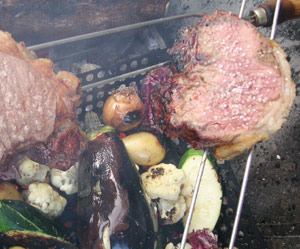

Picanha
5,5 von 6Zwei schöne Picanha (Entrecotes) von ca. je 600 Gramm vom Metzger zuschneiden lassen. Am Stück auf einen Spiess aufziehen. Mit Churrasco-Salz bestreuen und auf dem Grill rosa braten. Sobald eine schöne Kruste entstanden ist mit einem scharfen Messer eine dünne Schicht abschneiden, servieren und das Fleisch wieder auf den Grill legen und das ganze wiederholen.
